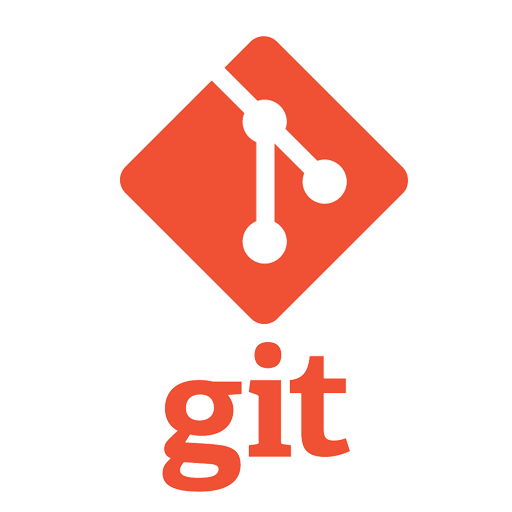

Soy estudiante en programación desde Noviembre del 2021. Antes de eso, me formé en matemáticas en el profesorado de la Universidad Nacional de Misiones.
Desde entonces, eh estudiado de forma auto-didácta con recursos que pude encontrar en distintas páginas web como: FreeCodeCamp, Pildoras Informaticas, Soy Dalto, Udemy.
Actualmente me encuentro desarrollando 3 programas de formacion en programación:
 One - Oracle Next-Education, es desarrollado en la plataforma de aprendizaje Alura Latam. en
el que desarrollaremos habilidades Front-end (html, css,
javascript), estudiaremos en profundidad el lenguaje Java y además
brindan capacitaciones en soft skills. Finalización: Julio 2022.
One - Oracle Next-Education, es desarrollado en la plataforma de aprendizaje Alura Latam. en
el que desarrollaremos habilidades Front-end (html, css,
javascript), estudiaremos en profundidad el lenguaje Java y además
brindan capacitaciones en soft skills. Finalización: Julio 2022.
 Yo Quiero Programar
de ConoSur Tech, en el que vamos a desarrollar el siguiente stack
que consta de 6 diplomados: 1- HTML & CSS; 2- Fundamentos de
Programación; 3- JavaScript; 4- Programación en C#; 5- Fundamentos
de Bases de Datos; 6- Fundamentos de DevOps. Sin fecha estimada de
finalización.
Yo Quiero Programar
de ConoSur Tech, en el que vamos a desarrollar el siguiente stack
que consta de 6 diplomados: 1- HTML & CSS; 2- Fundamentos de
Programación; 3- JavaScript; 4- Programación en C#; 5- Fundamentos
de Bases de Datos; 6- Fundamentos de DevOps. Sin fecha estimada de
finalización.
#YoProgramo es la segunda etapa del programa Argentina Programa. Se desarrolla en los siguientes modulos: Introducción a desarrollo web y aplicaciones; Front End: estático (html, css y javascript), Dinámico (Angular); Bases de datos; POO - Buenas prácticas de programación; Java; Java Spring boot; Dev Ops. Finalización: Septiembre 2022.
Creo que tener las herramientas adecuadas y un plan de trabajo reduce significativamente el tiempo de cualquier persona. "Dame 6 horas para cortar un árbol y pasaré 4 afilando el hacha" - Abraham Lincoln
Estos son los lenguajes de programacion en los que eh desarrollado práctica y las herramientas en las que me perfecciono dia a dia:
 Este
lenguaje de etiquetas lo desarrollé en casi todos los cursos hasta
ahora y tener en claro su semantica es fundamental para el SEO.
Este
lenguaje de etiquetas lo desarrollé en casi todos los cursos hasta
ahora y tener en claro su semantica es fundamental para el SEO.
La creatividad solo es una parte pequeña del trabajo, lo fundamental esta en "atornillarse a la silla" y dedicarle el tiempo necesario para alcanzar tus metas.
 Someterse
a la disciplina de la programación requiere estructura, orden y
estrategia. Este lenguaje me enseño la importancia de la
fragmentacion de los problemas y la reutilizacion del codigo.
Someterse
a la disciplina de la programación requiere estructura, orden y
estrategia. Este lenguaje me enseño la importancia de la
fragmentacion de los problemas y la reutilizacion del codigo.
Inicie la logica de programacion auto-didacta con python por recomendación debido a su simpleza. Con este lenguaje realizé practicas de webscripting con manipulación de exel.
 Ini
Ini


Bienvenido a mi Portafolio
Al finalizar su recorrido, espero que pueda dejar una opinion/recomendacion que pueda enriquecer mi proyecto.
Muchas Gracias por la visita!!Bienvenido a mi Portafolio
Al finalizar su recorrido, espero que pueda dejar una opinion/recomendacion que pueda enriquecer mi proyecto.
Espero poder desarrollar habilidades que me permitan insertarme en el mundo del desarrollo de Software y obtener experiencia como Trainee.
Muchas Gracias por la visita!!